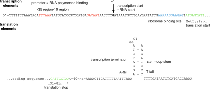
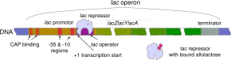
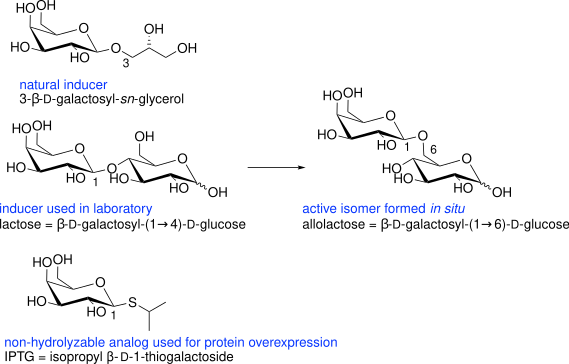
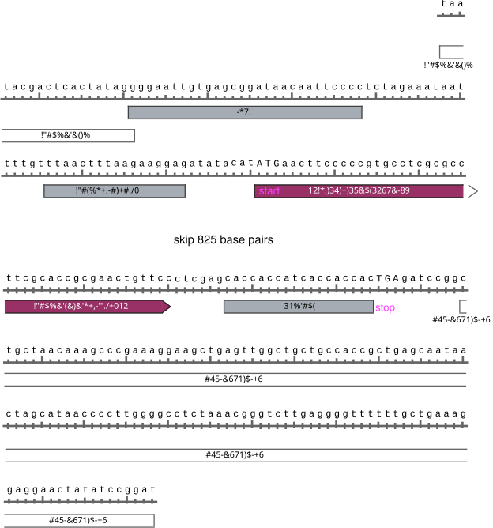
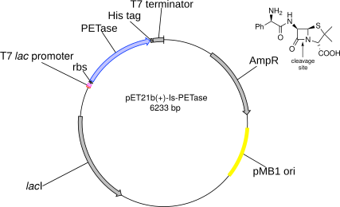
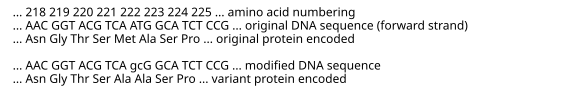
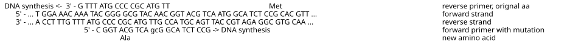
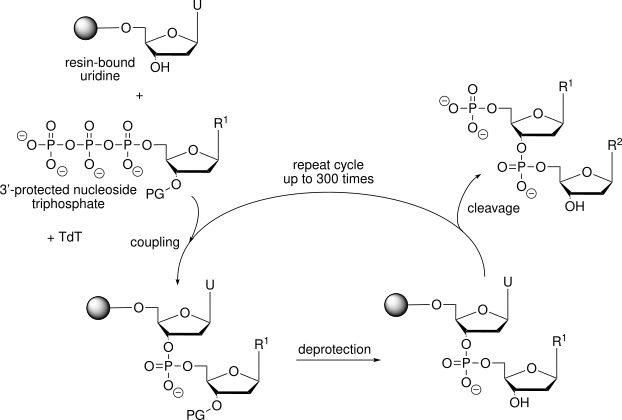
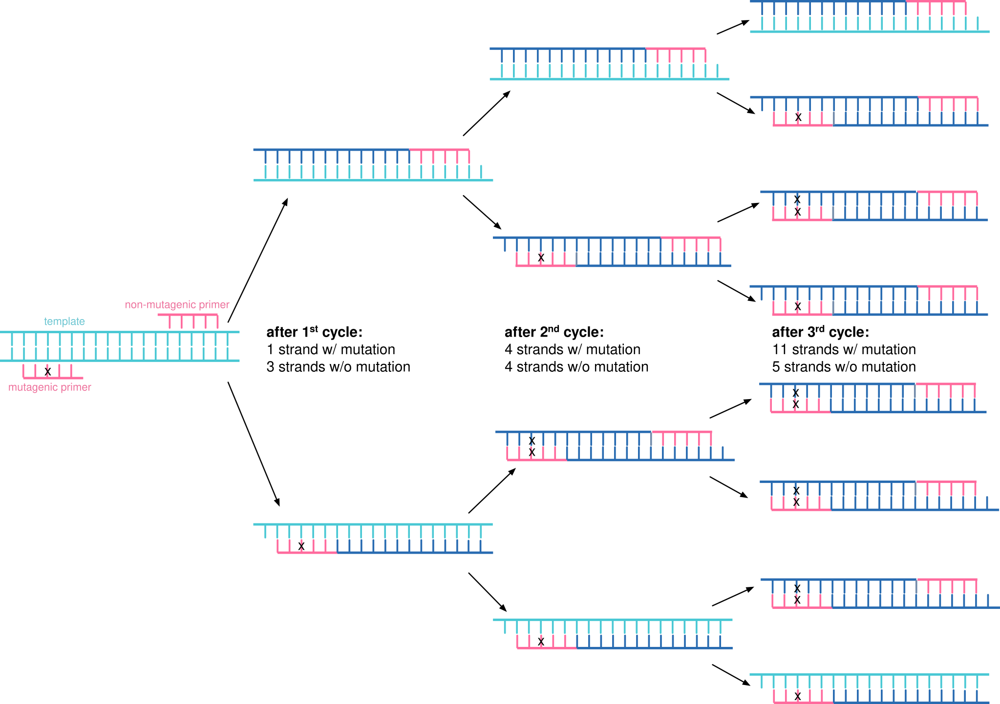

2 Making Protein Variants
© 2023-2026 Romas Kazlauskas. All rights reserved. Last revised: March 2026.
Summary. Protein expression converts DNA into protein. It involves two steps: the transcription of the coding region of the DNA into mRNA by RNA polymerase followed by the translation of the mRNA into protein by the ribosome. Proteins are manufactured by modification of the natural protein synthesis pathways in microbes like Escherichia coli. The modifications specify the protein to make and increase the amount of protein made. The DNA encoding the target proteins is carried on plasmids which are circular, independently replicating genetic elements. Protein synthesis also requires DNA regions outside the coding sequence to start and stop transcription of the DNA to mRNA and translation of the mRNA to protein. Experimental techniques for construction of plasmids include template-independent DNA synthesis, cutting of DNA with restrictions enzymes and assembly of DNA fragments using the polymerase chain reaction.
Key learning goals
- Protein overexpression plasmids encode the target proteins, the control elements needed to make large amounts of protein, and other regions required for plasmids to replicate in microbes.
- The main control of protein expression is at transcription of DNA to mRNA step. The lac operator (a region of DNA) and lac repressor (a protein that binds to the lac operator) serve as on/off switches for transcription of DNA to mRNA. Addition of a non-hydrolyzable lactose analog, IPTG, turns on transcription. Other control points are the plasmid copy number and the strength of the ribosome binding site.
- The pET21 plasmid contains the gene encoding the target protein, T7 RNA polymerase promoter & terminator, lac operator, lacI gene and an ampicillin resistance gene. The pET plasmids uses T7 RNA polymerase, which is 5-10-fold more efficient than endogenous E. coli RNA polymerase.
- Site-directed mutagenesis uses the polymerase chain reaction with chemically or enzymatically synthesized DNA fragments (primers) to alter the DNA sequence to encode protein variants.
2.1 Protein expression (DNA \(\rightarrow\) mRNA \(\rightarrow\) protein)
Protein expression is the conversion of a DNA sequence into the corresponding protein. It consists of two steps. First, the DNA encoding the target protein is transcribed into messenger RNA (mRNA) by RNA polymerase. Second, this mRNA is translated into protein by the ribosome.
In biotechnology, proteins are manufactured by microbes, typically bacteria or yeast, that have been modified to make large amounts of the target protein. In the laboratory, researchers grow these microbes in 2-liter shake flasks containing approximately 400 mL of culture media (a mixture of amino acids, sugars, and other nutrients) in a warm incubator. Industrial manufacture uses large fermenters similar to those in a brewery. The details below refer to protein expression in prokaryotes like Escherichia coli.
Protein expression requires control elements outside the region that encodes the target protein. One set of control elements bind and release the RNA polymerase that transcribes the DNA, while another set of control elements bind and release the ribosome that translates the genetic code into protein. Thus, the DNA surrounding the gene that encodes the target protein also contains four additional regions (two start signals, two stop signals) outside the DNA sequence that encodes the target protein.
Transcription starts by binding the RNA polymerase to the double-stranded DNA upstream of the coding sequence, Figure 2.1. The recognition site, called the promoter, includes of two regions each 6 bases long. One occurs approximately 10 base pairs upstream of the start codon and the other occurs 35 base pairs upstream of the start codon. The RNA polymerase is larger than this region so that it covers a larger region when it binds - about 40 base pairs upstream and 20 base pairs downstream of the start codon.
![Flow diagram showing gene expression in three steps. Top: a DNA strand with a promoter region (containing -35 and -10 elements and the +1 transcription start site), a protein coding sequence, and a terminator. An arrow labeled “transcription” points to the mRNA, which shows a ribosome binding region, an overlapping start translation codon, and a stop translation codon. A second arrow labeled “translation” points to a wavy line representing the unfolded protein chain with labeled N- and C-termini. A third arrow labeled “folding” points to an oval representing the folded protein.](figures/chapter2/DNA_RNA_protein.svg)
Upon binding, the RNA polymerase unwinds approximately 16 bases of DNA around the start codon to expose single-stranded DNA as a template for transcription. The RNA polymerase starts the synthesis of an RNA strand that is complementary to the DNA. As the synthesis proceeds the polymerase unwinds the template DNA ahead of it and rewinds the DNA behind it, maintaining an unwound region of about 16 base pairs in the region of transcription.
RNA synthesis continues until the polymerase encounters a termination signal. Here the transcription stops, the RNA is released from the polymerase, and the polymerase dissociates from its DNA template. The termination signal in E. coli consists of a symmetrical inverted repeat of a GC-rich sequence followed by four or more A residues. Transcription of the GC-rich inverted repeat results in the formation of a segment of RNA that can form a stable stem-loop structure by complementary base pairing. This structure in the RNA disrupts its base pairing with the DNA template, which causes the termination. Termination occurs after the terminator region because it is the RNA, not the DNA that forms the stem-loop structure. The DNA must first be transcribed into RNA to form the stem-loop structure that causes termination.
Translation starts when the ribosome binds to the mRNA. The ribosome binding site (Shine-Dalgarno sequence) is approximately 8 bases upstream of the start codon (methionine codon), but the ribosome covers a much larger region including the start codon and the beginning of the coding region. Protein synthesis occurs as the ribosome moves along the RNA sequence in groups of three nucleotides and attaches the next amino acid to the growing protein chain. Termination occurs when the ribosome encounters a stop codon and detaches from the RNA and releases the completed protein. Thus, translation requires a ribosome binding site before the coding sequence and a stop codon after the coding region. The start codon, also required, is within the coding region.
The DNA sequence encoding the control elements for expression of a \(\beta\)-lactamase protein, Figure 2.2, shows a specific example of these elements.

2.2 Protein overexpression
Cells typically make small amounts of each protein, but to manufacture proteins for biotechnology applications one wants to make as much protein as possible. This overproduction of the target protein is called protein overexpression. The two common strategies to increase protein expression are to use a more efficient RNA polymerase and to include multiple copies of the DNA encoding the target protein. These approaches are very effective; up to 50% of the protein in an E. coli culture can be the target protein.
2.2.1 A better RNA polymerase
E. coli bacteria contain an endogenous RNA polymerase, but RNA polymerases from bacteriophage are often faster. Bacteriophage RNA polymerases hijack the cellular machinery of the host bacteria to make phage proteins instead of bacterial proteins. The most common replacement polymerase for increased protein expression is the T7 RNA polymerase, which originates from bacteriophage T7. The T7 RNA polymerase catalyzes RNA synthesis 5-10-fold faster than the E. coli RNA polymerase, so more than the normal amount of mRNA will be produced, which will lead to more protein.
Overexpressing the target protein with T7 RNA polymerase requires a gene that encodes and expresses the T7 RNA polymerase protein. Some strains of E. coli (such as BL21(DE3) and BL21(DE3)pLysS) have been engineered to contain the T7 RNA polymerase gene in their genomic DNA. These strains should be used for protein overexpression that requires the T7 RNA polymerase.
Overexpressing the target protein with T7 RNA polymerase also requires a different promoter upstream of the target gene so that it binds the T7, not the E. coli, RNA polymerase. The DNA sequence of the T7 promoter differs from the endogenous promoters in E. coli.
2.2.2 Multiple copies of the target protein gene
A second way to increase the amount of protein is to have many copies of the DNA that encodes the target protein and its control elements. Protein overexpression uses plasmids, which are small (5-10 kb), independently replicating, circular DNA molecules. The pET plasmid, which will be discussed later in this chapter, makes 15-20 copies of itself in E. coli. These multiple copies of the target protein DNA increase the amount of protein that is produced. pET plasmids are classified as low copy number plasmids; some high copy number plasmids make 500-700 copies of themselves in each cell.
2.2.3 Ribosome binding site
The slow step of translating mRNA into protein is the initiation of protein synthesis, which depends on binding of the ribosome to the ribosome binding site (Shine-Dalgarno sequence). Optimization of the initiation step can include optimizing the distance between the Shine-Dalgarno sequence and the start codon, eliminating any secondary structure in the mRNA that could hinder binding of the ribosome, and adding additional binding elements upstream of the Shine-Dalgarno sequence.[1]
2.3 Turning protein overexpression on or off
Strong overexpression of the target protein hinders the growth of microbes. Diverting most of the cell’s energy and resources to synthesis of the target protein can even prevent growth entirely. The solution is to initially turn off the overepression of the target protein to allow the bacteria to grow, then turn it on to produce the protein. During overexpression phase the bacteria no longer multiply, but instead make the target protein. The most commonly used on/off switch is the lac operator.
The lac operator originates from the lactose operon or lac operon. An operon is a set of genes whose expression is regulated together. The lac operon consists of three structural genes and a lac operator, Figure 2.3. The lac operator is a section of DNA that controls the expression of the three genes by reversibly binding the lac repressor protein, which is encoded by the lacI gene elsewhere in the genome. The lac operator is in the promoter region where the RNA polymerase must bind, so when the lac repressor protein binds to the lac operator, it blocks the RNA polymerase from binding. By default, the expression of the three genes in the lactose operon is off. Binding of allolactose to the lac repressor protein changes its shape so that it dissociates from the lac operator. Expression is now turned on because the RNA polymerase can bind to the promoter.

The off state of the lactose operator is not perfect. The lac repressor protein sometimes dissociates from the lac operator even with no lactose present leading to leakiness, that is, constant low-level expression. Given the strong expression from the T7 promoter, the imperfect off state can lead to difficulties in cell growth.
To improve the off state, researchers use a low copy number plasmid and two copies of the lac operator. The low copy number of the plasmid reduces the probability that the lac repressor protein spontaneously dissociates from the lac operator to turn on protein synthesis.
The two lac operator switches are used to turn off expression of both the target gene and the T7 RNA polymerase gene. Overexpression of the target protein first requires expression of the T7 RNA polymerase. Placing the lac operator in the promoter region blocks this first step. (Expression of the T7 RNA polymerase uses the endogenous E. coli promoter.) The second location for the lac operator is in the T7 promoter region upstream of the target gene. In the no lactose state, the lac repressor protein should prevent expression of the T7 RNA polymerase and of the target protein thus decreasing the leakiness of the off state.
To further ensure that protein overexpression is turned off, some researcher add a third switch - an inhibitor of the T7 RNA polymerase. This inhibitor is a protein, T7 lysozyme. It requires an additional plasmid, pLysS, that encodes synthesis of the T7 lysozyme protein.
In the presence of lactose or an analog, the switches are on. Lactose binds to the lactose repressor protein, which changes its shape in a way that releases it from the two lac operators. Upon release of the lactose repressor protein, the endogenous E. coli polymerase binds and starts to transcribe the gene encoding the T7 RNA polymerase. After it is expressed, the T7 RNA polymerase can bind to the promoter upstream of the target gene to initiate protein expression.
Lactose induces the lac promoter indirectly. Lactose can be isomerized into allolactose, which induces the lac promoter.[2] The natural inducer of the lac promoter is likely galactosyl glycerol found in plant galactolipids and common in the diet of ruminants and herbivores,[3] Figure 2.4.

For biotechnology applications, researchers use a non-hydrolyzable analog of galactosyl glycerol to induce the lac promoter. Isopropyl β-D-thiogalactopyranoside, IPTG, contains a sulfur atom at the glycosidic link, which prevent hydrolysis. Induction starts upon addition of IPTG and continues indefinitely since the compound does not hydrolyze.
A less expensive alternative to the lac promoter often used in industry is the \(\lambda\) promoter, which is turned on by heating the culture to 42 °C for 30 min instead of adding IPTG.[4] Initially the culture is grown at 30 °C and a thermolabile variant of the \(\lambda\) cI857 repressor protein binds to the operator site of the \(\lambda\) promoter and blocks transcription. Upon heating the repressor irreversibly denatures and no longer binds to the operator allowing protein expression to proceed.
In summary, there are two or three off switches for protein expression using pET plasmids. Two of the off switches are lac operators in the promoter region: one in the T7lac promoter upstream of the coding region on the plasmid and one in the endogenous promoter upstream of the gene for the T7 RNA polymerase on chromosome. Both of these switches control the synthesis of mRNA. The addition of IPTG turns these switches on. The final switch is the low level expression of T7 lysozyme by the pLysS plasmid to inhibit the T7 RNA polymerase. The BL21(DES)pLysS strain of Escherichia coli includes this plasmid.
Figure 2.5 shows an example gene and its associated control elements for expression in Escherichia coli. This coding region encodes a poly(ethyleneterephthalate)-degrading enzyme, a PETase.[5] The gene originates from the bacterium Ideonella sakaiensis, but the DNA sequence has been optimized for expression in Escherichia coli. This optimization replaces codons that are rarely used in E. coli with a synonymous, more commonly used codon. The start and stop elements for the RNA polymerase are the T7 promoter and the T7 terminator. The T7 promoter contains the lac operator, which serves as an on/off switch. The start elements for translation are the ribosome binding site (T7_trans_en_RBS) and the start codon (ATG) and the stop element for translation is the stop codon (TGA).

The PETase gene contains eight additional amino acid residues at the C-terminus: a linker (not labelled) and a His-tag. The linker (CTCGAG) encodes the dipeptide Leu-Glu, while the His-tag (CACCACCATCACCACCAC) encodes six histidine residues. The addition of six histidine residues to the protein simplifies purification. After protein expression, the mixture of proteins is added to a column containing bound nickel or cobalt ions, which have a high affinity for the imidazole ring of histidine. Most proteins bind poorly to the column and elute quickly, but the His-tagged protein binds tightly. After washing away the unwanted proteins, eluting with a buffer containing imidazole releases the His-tagged protein.
2.4 pET plasmids
The pET family of plasmids are often used for protein overexpression. The pET family of plasmids all use the T7 RNA polymerase (pET stands for plasmid for Expression by T7 RNA polymerase), but differ in the some details. The expression plasmid used to make the PETase protein mentioned above is derived from the pET21 plasmid, Figure 2.6. The pET21 plasmid contains an origin of replication, which determines its copy number, and genes to express the lactose repressor protein (lacI), and an ampicillin resistance protein (AmpR). The lactose repressor protein binds to the lac operator to turn off protein expression. The expression of lacI and AmpR are constitutive (always on) at a normal level (the promoters bind the E. coli RNA polymerase).

The ampicillin resistance protein or \(\beta\)-lactamase is a selectable marker that ensures that only bacteria containing the pET21 plasmid grow in the culture. Researchers add ampicillin to the growth media, which prevents bacterial growth. Bacteria containing the pET21 plasmid express the \(\beta\)-lactamase, so they grow in the presence of ampicillin. This expression of the AmpR gene is constitutive and at a normal level. Figure 2.2 above shows the sequences of control elements for the AmpR gene on a pET21 plasmid.
The different pET plasmids (about fifty) differ in mainly in the purification tag. The His-tag may be at the N- or C-terminus; it may be removable with a protease if the linker contains a protease-sensitive site. Some plasmids encode a glutathione-S-transferase (GST) purification tag. GST is a 26 kDa protein. It has a high affinity for glutathione and yields higher purity protein than the His-tag. Another family of plasmids used for protein expression are the pBAD plasmids, which use an arabinose promoter, Table 2.1. Protein expression from these plasmids is more tightly controlled than for pET plasmids and can be turned off more completely or tuned to different levels. Protein synthesis is turned on by the addition of different amounts of arabinose.
| name | antibiotic resistance | origin of replication | promoter, inducer |
|---|---|---|---|
| pET | ampicillin or kanamycin | pMB1 ori, 15-20 copies per cell | strong, T7 or T7lac, IPTG |
| pBAD | ampicillin or kanamycin | p15A ori, 10-12 copies per cell | tunable, arabinose |
2.5 Site-directed mutagenesis
The most common method of protein engineering is site-directed mutagenesis to replace an existing amino acid residue in a protein with a different amino acid that is expected to improve the protein. Site-directed mutagenesis changes the DNA sequence encoding the target protein to encode a different amino acid at the selected location. Although amino acid replacements are the most common change made to improve proteins, one can also insert additional amino acids or delete amino acids using the same methods.
As an example of site-directed mutagenesis, consider the replacement of methionine 222 with alanine to stabilize subtilisin for use in laundry detergent,[6] Fig Figure 2.7. This replacement required replacing the ATG codon for methionine with GCG to encode alanine. In contrast to methionine, alanine lacks a sulfur atom and is unaffected by bleach. Alanine is also smaller than methionine so it does not hinder access of the substrate to the active site.

Smith and coworkers first reported site-directed mutagenesis in 1978,[7] but advances in molecular biology methods have yielded improved procedures. The section below describes using an inverse polymerase chain reaction (inverse PCR) to replace methionine 222 in subtilisin with alanine. In the original work the researchers at Genentech and Genencor used another method since their experiments were completed before the invention of the polymerase chain reaction.[6]
This site-directed mutagenesis method uses an inverse polymerase chain reaction (inverse PCR) to copy the whole plasmid using back-to-back primers,[8] Figure 2.8. The primers are designed to bind back-to-back with the DNA synthesis proceeding outward. Since the plasmid is circular, the result is a linear double stranded copy of the plasmid. Copying the whole plasmid avoids the cut and paste steps that complicated older site-directed mutagenesis methods.

The DNA primers are single-stranded 20-30 nucleotide long oligomers. The location of the primers should be such that desired mutation (typically 1-3 base changes) lies approximately in the center of one of the primers, which is the mutagenic primer. The mutagenic primer encodes the new DNA sequence; thus several nucleotides are not complementary to the plasmid DNA. One primer is complementary to one DNA strand; the other primer is complementary to the other DNA strand. The primers should have similar melting temperatures and not form dimers with themselves or each other. Figure 2.9 shows an example of primers designed to replace methionine 222 in subtilisin with alanine.

An additional incubation with three enzymes circularizes this linear DNA fragment for insertion and replication in bacteria, Figure 2.8. Simultaneous treatment with a kinase to add a phosphoryl group to the 5’-ends of the PCR products and a ligase to join the two ends yield a circular double stranded DNA. Also in the same reaction, methylation-specific nuclease fragments the original template, which does not contain the mutation. The template DNA is the circular wild-type plasmid isolated from E. coli. When plasmids replicate in E. coli, methyl groups are added to the DNA. The nuclease recognizes and cleaves DNA containing these methyl groups. In contrast, the primers and the DNA synthesized using the polymerase chain reaction do not contain methyl groups and are ignored by this nuclease. The result is a circular copy of the plasmid only containing the altered DNA sequence. Transfer of this plasmid into E. coli allows researchers to grow cells, which then make the variant protein encoded.
2.6 Template-independent synthesis of DNA
The site-directed mutagenesis experiment above relies on the ability to synthesize DNA fragments (primers) with a defined sequence. DNA polymerase can synthesize DNA, but only by copying an existing template. To make primers and even entire genes, one needs a template-independent synthesis of DNA.
The first approach to template-independent DNA synthesis was chemical synthesis.[9] This synthesis is relatively complex and involves reactive intermediates and toxic solvents. Researchers normally order the desired sequence from a commercial service. The synthesis starts with a solid silica support. Reagents such as protected nucleoside phosphoramidites are washed over the silica to carry out the multiple steps needed to add each base. The harsh reaction conditions slowly damage the DNA, which caps the length of the DNA to about 200 bases. More recently, researchers have developed enzymatic approaches for the template-independent synthesis of DNA, Figure 2.10. This enzymatic approach relies on an engineered terminal deoxynucleotidyl transferase (Tdt) for the coupling step. The enzymatic approach generates less waste, can make longer oligonucleotides (>1000 bases) and can make repetitive sequences that the chemical methods cannot.[10],[11]

Entire genes and longer fragments can be synthesized by chemical or enzymatic synthesis of 300 bp DNA fragments, followed by joining them to create longer oligonucleotides.[12] The experimental procedures for the methods described in this chapter be found online or in molecular biology handbooks.[13]
Glossary
- Operator
- is a section of DNA upstream of the a gene that binds a transcription regulator. For example, the lac operator binds the lac repressor protein, which inhibits transcription of the downstream gene.
- Promoter
- a region of DNA upstream of a region that encodes one or more proteins. The promoter region binds the RNA polymerase that will transcribe the DNA into mRNA.
- Plasmid
- is a circular, independently replicating, DNA within a microbe separate from the chromosomal DNA. For example, pET plasmids are inserted into Escherichia coli to overexpress proteins under the control of a T7 promoter.
- Primer
- is a short (10-50 nucleotides), single-stranded DNA fragment. When this fragment bind to a complementary region on a longer DNA fragment, then DNA polymerase can extend the primer making a complementary copy of the longer DNA fragment. If the primer contains a mutation, then the longer copy will also contain that mutation.
- T7 promoter
- is a promoter that binds the T7 RNA polymerase, which is more efficient than the endogenous RNA polymerase in Escherichia coli.
References
Problems
1. Identify whether the items below are proteins, oligonucleotides or small organic molecules. Explain their role in protein overexpression.
lacI gene product, T7 RNA polymerase, lac operator, ampicillin, IPTG, ribosome binding site, stop codon, T7 terminator, His-tag, mutagenic PCR primer, transcription start site
2. a) Why does DNA transcription stop after the terminator, but mRNA translation stop at the stop codon? b) What problems could arise when using a T7–lac promoter on a high–copy number plasmid? c) Why do researchers put the gene encoding T7 RNA polymerase on the genome instead of on the expression plasmid?
3. Plain text files. In computing, plain text files are files that contain only text characters including white spaces and punctuation. For example, a plain text file could contain the following FASTA-formatted amino acid sequence for subtilisin:
>tr|M5B284|M5B284_BACIU Subtilisin OS=Bacillus subtilis OX=1423 GN=aprE
MRNKKLWISLLFALTLIFTMAFSNMSAQAAGKSSTEKKYIVGFKQTMSAMSSAKKKDVIS
EKGGKVQKQFKYVNAATATLDEKAVKELKQDPSVAYVEEDHIAHEYAQSVPYGISQIKAP
ALHSQGYTGSNVKVAVIDSGIDSSHPDLNVRGGASFVPSETNPYQDGSSHGTHVAGTIAA
LNNSIGVLGVAPSASLYAVKVLDSTGSGQYSWIINGIEWAISNNMDVINMSLGGPSGSTA
LKTVVDKAVSSGIVVAAAAGNEGSSGSSSTVGYPAKYPSTIAVGAVNSSNQRASFSSAGS
ELDVMAPGVSIQSTLPGGTYGAYNGTSMATPHVAGAAALILSKHPTWTNAQVRDRLESTA
TYLGSSFYYGKGLINVEAAAQIn contrast, formatted text files include additional characters within the text to indicate font, bold, line spacing, and other information. For example, <b> and </b> indicate bold in the example below. The program that you use to open this file must know that these formatting characters are not part of the text, but indicate formatting commands. If not, it may misinterpret these characters as data. The same subtilisin sequence with HTML bold tags added to the first line:
>tr|M5B284|M5B284_BACIU Subtilisin OS=Bacillus subtilis OX=1423 GN=aprE
<b>MRNKKLWISLLFALTLIFTMAFSNMSAQAAGKSSTEKKYIVGFKQTMSAMSSAKKKDVIS</b>
EKGGKVQKQFKYVNAATATLDEKAVKELKQDPSVAYVEEDHIAHEYAQSVPYGISQIKAP
ALHSQGYTGSNVKVAVIDSGIDSSHPDLNVRGGASFVPSETNPYQDGSSHGTHVAGTIAA
LNNSIGVLGVAPSASLYAVKVLDSTGSGQYSWIINGIEWAISNNMDVINMSLGGPSGSTA
LKTVVDKAVSSGIVVAAAAGNEGSSGSSSTVGYPAKYPSTIAVGAVNSSNQRASFSSAGS
ELDVMAPGVSIQSTLPGGTYGAYNGTSMATPHVAGAAALILSKHPTWTNAQVRDRLESTA
TYLGSSFYYGKGLINVEAAAQBioinformatics and protein engineering often use plain text files to store information and commands. You can open plain text files using word processing programs like Word or Pages, but to keep them as plain text files, that is, not add formatting text to them, be sure to use a plain text format when you save them (usually ‘txt’ extension) and not a word processing format (e.g., ‘pages’ or ‘docx’ extension). More commonly researchers use text editor programs, which are programs intended to manipulate plain text files: Mac: TextEdit,* BBEdit; Windows: Notepad, Textpad; Linux: pico, vim, nano). The next question requires you to work with a plain text file similar to the example above, which is a FASTA format file. FASTA format files are plain text files used to store DNA or amino acid sequences.
Practice: The <b> and </b> indicate bold in web pages, which use ‘html’ format files. Copy the second amino acid sequence text above into a text editor, save it with the extension ‘html,’ then open that file with a web browser. The <b> and </b> characters should be hidden and the characters in between should be displayed as bold. Next, change the extension of this file from ‘html’ to ‘txt’ and open with the web browser again. The browser now displays all the characters in the file, but does not show anything in bold. A web browser can read both plain text files and web pages, which have the html format. The file extension tells the browser whether to interpret the characters as text or as formatting information. Most bioinformatics and computational chemistry programs expect text files as input. If the file contains formatting or other codes, they will change the meaning of the file and the program will not accept them.
4. PCR exponentially amplifies DNA in a sample through repeated cycles of denaturation, primer annealing, and extension. In site-directed mutagenesis using PCR with a mutagenic primer, almost all newly synthesized DNA strands contain the mutation because they either incorporate the mutagenic primer sequence or copy a DNA strand that already contains the mutation (Figure 2.11). In the first cycle, extension from the mutagenic primer yields a daughter strand containing the mutation, while extension from the complementary primer produces a strand without the mutation. In subsequent cycles, the mutagenic primer can anneal to and extend from both wild-type and already-mutated template strands. Non-mutated strands increase only by copying the original wild-type template using the non-mutagenic primer. Each cycle increases the proportion of mutated strands. After approximately 25–35 cycles, nearly every amplified DNA molecule incorporates the mutagenic primer sequence and therefore contains the mutation. The original wild-type template remains as a small fraction of the total (it is not amplified, only diluted by the exponentially increasing mutated products).

As an exercise, show that the 32 strands after the next cycle (including both template and synthesized strands) would consist of 26 strands with the mutation and 6 strands without the mutation. Further show that 11 of the resulting 16 double-stranded DNA molecules would contain mutations on both strands.
5. Site-directed mutagenesis. Gluten, a protein found in wheat, rye, and barley, contains a high proportion of proline and glutamine. Digestive proteases cleave gluten to oligopeptides enriched in the dipeptide sequence proline-glutamine because peptides containing this sequence are resistant to digestive proteases. In celiac disease patients, these oligopeptides are believed to trigger an autoimmune response, which causes diarrhea and other gastrointestinal problems. One potential solution is adding a protease that can degrade Pro-Gln containing peptide to the meals of celiac patients. Gordon and coworkers describe protein engineering to create such a protease, which they called KumaMAX.† You do not need to read that paper to answer this question. Some of the authors of that paper formed the company PvP Biologics to further improve KumaMAX. Recently this improved protease passed Phase I clinical trials and in 2020 Takeda Pharmaceutical Company acquired PvP Biologics. In the future (after 2025), it may be a treatment for celiac disease.
KumaMAX contains seven amino acid substitutions as compared to KumaWT. This question focuses on the Gly319Ser substitution, which contributes to the switch in selectivity from Arg/Lys to Gln by decreasing the amount of space available and by adding a hydrogen bond partner for Gln.
Find the DNA sequence for KumaWT in GenBank. GenBank is found at https://www.ncbi.nlm.nih.gov/nuccore/. Search for kumamolisin; the sequence should be the first hit. The enzyme is synthesized as a 552 amino acid residue precursor, which corresponds to 552 \(\cdot\) 3 = 1656 nucleotides. The DNA sequence contains 5841 nucleotides, so we must find the section that codes for the protein. In the search results, click on the text ‘GenBank’ below the name of the gene. This page contains the DNA sequence and information about the DNA sequence. In the ‘FEATURES’ section, it mentions that the coding region (CDS) corresponds to nucleotides 2940 to 4598. How many nucleotides does that correspond to? (Your answer should be a number.) Why does that number not match \(552 \cdot 3\)? Hint: The length of an amino acid or nucleotide sequence is last_number – first_number + 1. The ‘+ 1’ is needed to include the starting amino acid or nucleotide. For example, a sequence of five nucleotides numbered 1 through 5 has a length of 5 - 1 + 1 = 5.
Save the coding region as a FASTA-formatted file on your computer. Click on the text ‘CDS’ in the features section to show the DNA sequence with the coding region highlighted. On this page, click on ‘FASTA’ at the bottom right (near the pop-up with the translation to amino acids) to view only the coding region in FASTA format. FASTA-formatted files are plain text files, often named using .txt or .fasta as the extension, but this extension is not required. The FASTA format requires at least two lines. The first line starts with ‘
>’ (greater than symbol) and contains a description of the sequence. This line is followed by one or more lines containing single-letter codes for the amino acid or nucleotide sequence. Copy and paste the FASTA file into an empty text file on your computer. Save the file with the name ‘KumaWT.fasta’. (Do not copy the entire page; only the FASTA part.) Your file should contain about 1660 nucleotides, not about 5800. It must be a text file.Design primers for site directed mutagenesis of Gly319 to Ser in KumaWT using the web tool NEBaseChanger (https://nebasechanger.neb.com). Upload the KumaWT.fasta file in the ‘enter your sequence’ section and G319S in the ‘select input mode and set mutations’ section. Keep the other entries at default values, then click ‘build primers’. What is the DNA sequence that codes for Gly318Gly319Pro320? What will be the new sequence that encodes Gly318Ser319Pro320?
Sketch a diagram of how the primers will bind to a circular plasmid containing this gene; include the sequence of the primers in your diagram oriented correctly and indicate the direction of DNA synthesis.
Answers
Click to show answers
1. oligonucleotides: ribosome binding site (RNA), stop codon (RNA), lac operator (DNA), T7 terminator (DNA), transcription start site (DNA)
proteins: lacI gene product, T7 RNA polymerase, His-tag (part of a protein)
small molecules: ampicillin, IPTG
2. a) In bacteria, transcription termination requires that the RNA polymerase transcribe through the terminator sequence to produce the RNA hairpin and poly-U tract. This RNA secondary structure destabilizes the RNA–DNA hybrid and causes polymerase dissociation. Because the RNA structure only forms after the terminator has been transcribed, transcription stops after the terminator. By contrast, in translation, a stop codon is not decoded into an amino acid but instead recruits release factors that trigger termination. Thus translation ends at the stop codon. b) The lac operator is leaky, so some transcription occurs even without IPTG induction. On a high–copy plasmid, many T7 promoters combined with leaky expression can produce enough toxic or burdensome protein to overwhelm host metabolism and inhibit growth. c) Placing the T7 RNA polymerase gene in the chromosome limits its copy number to one (two during replication). If it were carried on a plasmid, the multiple copies would amplify leaky expression from the T7–lac promoter, leading to uncontrolled polymerase production, runaway target gene expression, and severe metabolic stress.
5. a) 4598 - 2940 + 1 = 1659. The extra three nucleotides in the DNA sequence encode the stop codon.
- text file containing the text below
>AB070740.2:2940-4598 Bacillus sp. MN-32 kscp gene for kuma ...
ATGAGCGACATGGAGAAGCCTTGGAAGGAAGAGGAGAAGCGCGAGGTCCTCGCGGGACACGCTCGCAGGC
AGGCGCCGCAGGCTGTCGATAAGGGACCGGTGACCGGGGACCAGCGGATTTCCGTTACGGTCGTGCTGCG
CCGCCAACGAGGCGATGAACTCGAGGCGCATGTGGAACGCCAGGCCGCGCTCGCACCTCACGCGCGAGTG
CATCTGGAGCGAGAAGCGTTTGCCGCTTCGCACGGCGCTTCGCTCGACGACTTTGCGGAGATTCGAAAGT
TCGCGGAAGCGCACGGGCTCACGCTCGATCGCGCCCACGTGGCTGCGGGCACCGCGGTGCTGAGCGGCCC
GGTGGACGCCGTTAACCAAGCGTTTGGGGTCGAGTTGCGCCATTTCGATCATCCAGACGGATCCTATCGA
AGCTACGTCGGCGACGTGCGTGTGCCGGCTTCCATCGCGCCTCTGATTGAAGCGGTGTTTGGCCTGGACA
CGCGCCCGGTGGCGCGGCCCCACTTTCGGCTGCGGAGGCGCGCCGAGGGCGAGTTTGAGGCGAGATCGCA
GTCCGCGGCGCCGACTGCGTACACGCCGCTCGACGTCGCGCAGGCGTACCAATTTCCCGAGGGGCTCGACplus 15 more lines
GGTGGCCCT and GGTagcCCT
GlyGlyPro GlySerPro- answer should also show a circular diagram.
<-- cggcaggtagcacaggta
5'- GCCGTCCATCGTGTCCATCAGCTGGGGTGGCCCTGAGGACA
3'- CGGCAGGTAGCACAGGTAGTCGACCCCACCGGGACTCCTGT
cagctggggtagccctgaggaca -->* Unfortunately, the default settings use rich text formatting which includes formatting characters. Change the default by selecting Format → Make Plain Text option in the menu bar. This change will also set the extension of files saved in the future to ‘.txt’ from the default ‘.rtf’.↩︎
† Gordon et al. (2012) Computational design of an α-gliadin peptidase. J. Am. Chem. Soc. 134, 20513; https://doi.org/10.1021/ja3094795↩︎